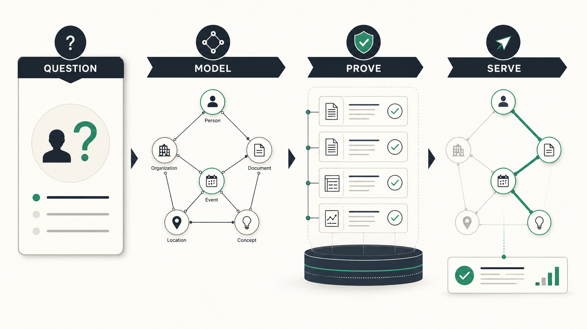

These terms are often placed in one diagram and then confused. They are connected, but their responsibilities are different. Harness engineering makes an agent safe and capable inside an environment. Loop engineering designs the control cycle that plans, acts, observes, and stops. Graph engineering makes connected facts, claims, and paths queryable and trustworthy.

The comparison
| Layer | Primary job | Owns | Failure it prevents |
|---|---|---|---|
| Harness engineering | Provide a controlled environment | Tools, permissions, filesystem, sandbox, memory, observability | Unsafe or unreliable agent actions |
| Loop engineering | Control work over time | Plans, tool choice, retry, verification, stop/escalation policy | Spinning, premature stopping, repeated bad actions |
| Graph engineering | Represent connected knowledge | Identity, relationships, evidence, temporal claims, query paths | Answers that lose relation, provenance, or impact chains |
Harness engineering: the environment
The harness is machinery around a model call: tools, schemas, permission gates, workspace state, durable memory, logging, and recovery. It defines the blast radius of action. It answers whether the agent can read a repository, call an API, write a file, or request approval. It does not decide the next step and it does not make a relationship true.
Loop engineering: feedback control
The loop turns a goal into successive turns: observe state, select an action, execute through the harness, inspect feedback, verify progress, then stop or escalate. Its design includes budgets, retry classification, checkpoints, routing, and termination. A loop may call a graph query, but a graph is not itself a loop.
Graph engineering: the knowledge contract
The graph represents a service depending on a library, a policy applying to a region, a document supporting an assertion, or a person holding a role during an interval. Its product is a path with evidence: what is related, by which relationship, according to which source, at what time?
How they compose
User goal → loop selects a question → harness executes an approved graph query → graph returns an evidence path → loop verifies it → harness records or gates the next actionFor an incident agent, the graph can locate upstream services and owners; the loop decides whether evidence is sufficient to escalate; the harness ensures paging or infrastructure changes respect permissions. More edges do not repair a missing approval gate; a more elaborate loop does not repair unreliable identity. Invest first in the layer matching the observed failure.
Environment, feedback, and connected knowledge are complementary systems. A durable design gives each one a narrow, testable job.